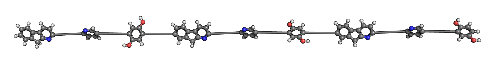
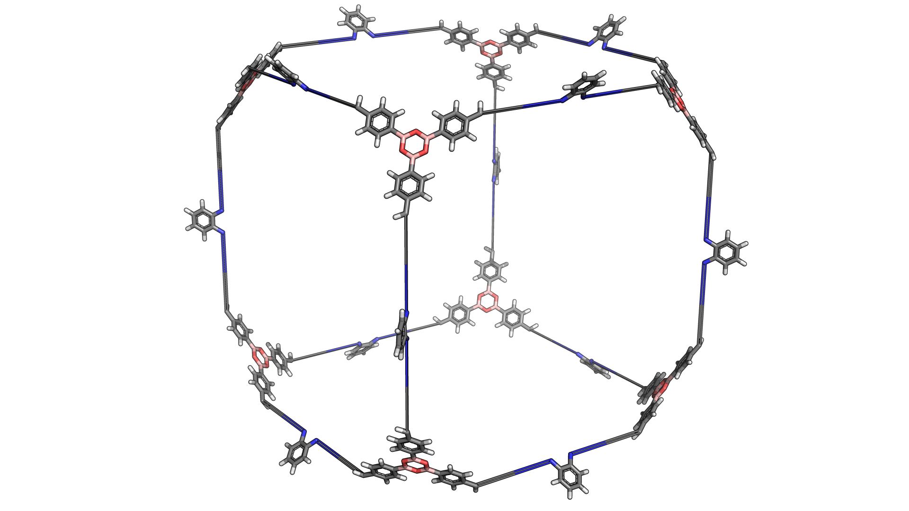
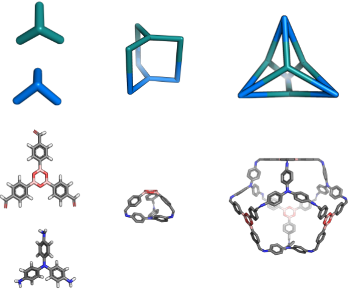
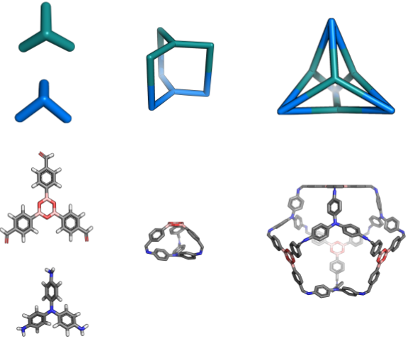
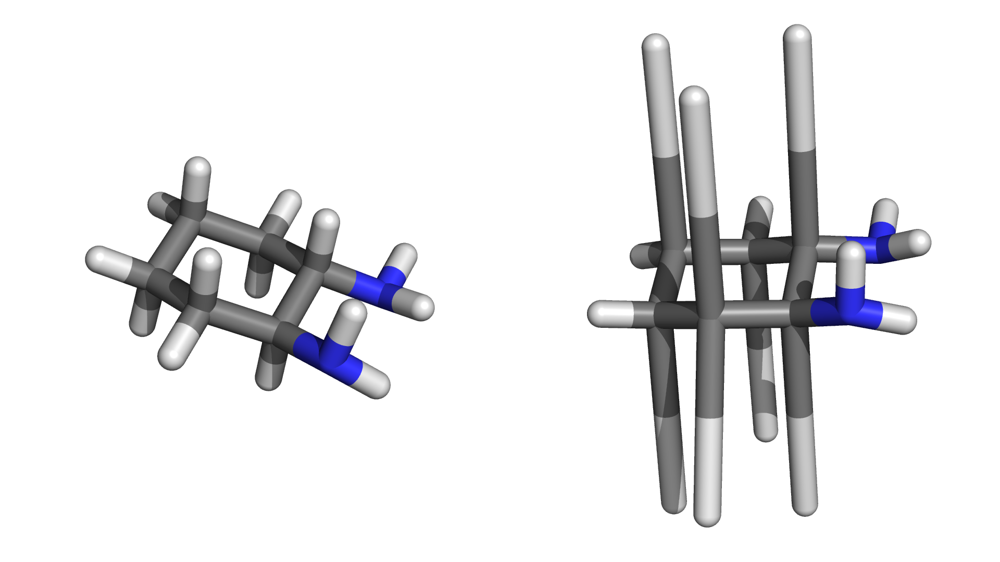
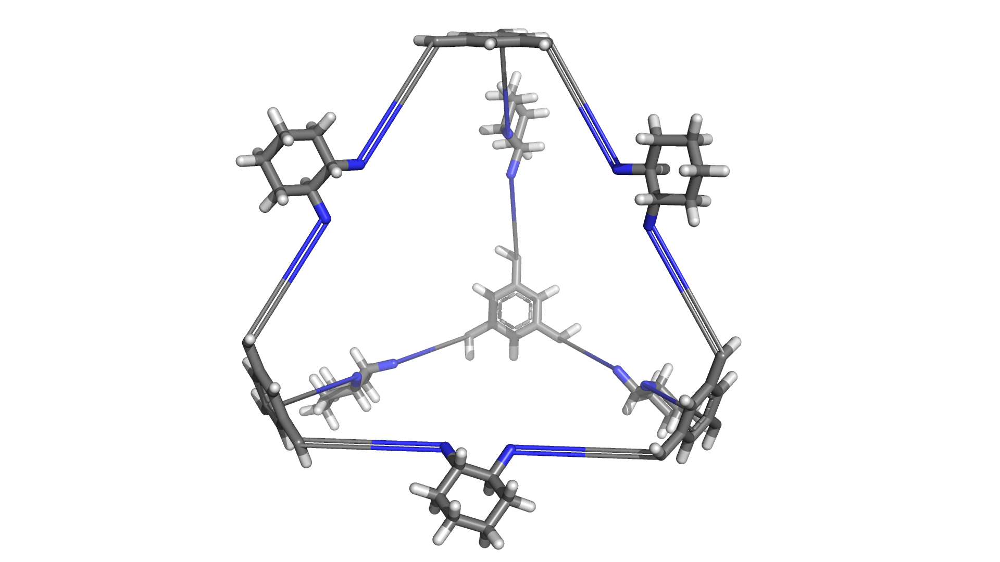
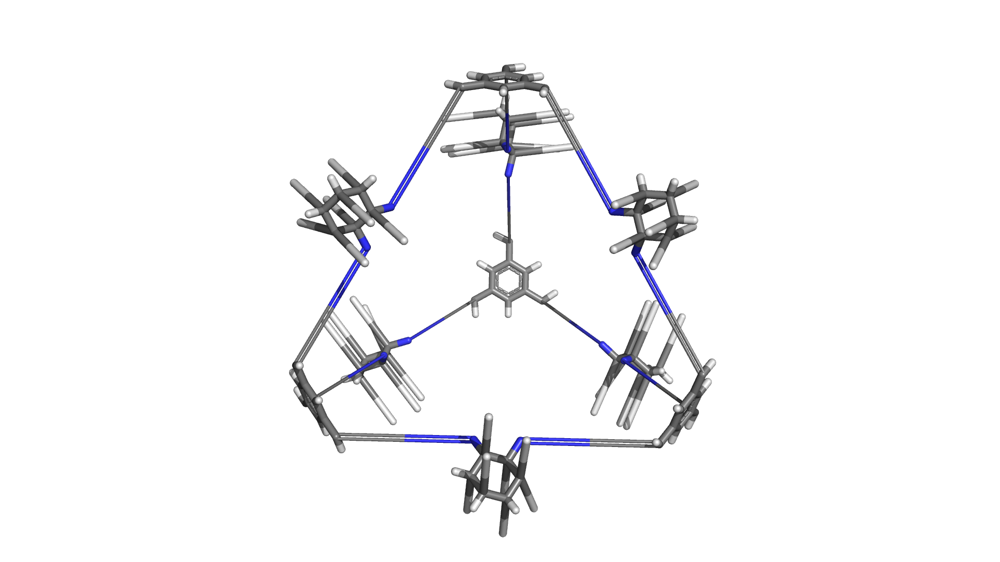
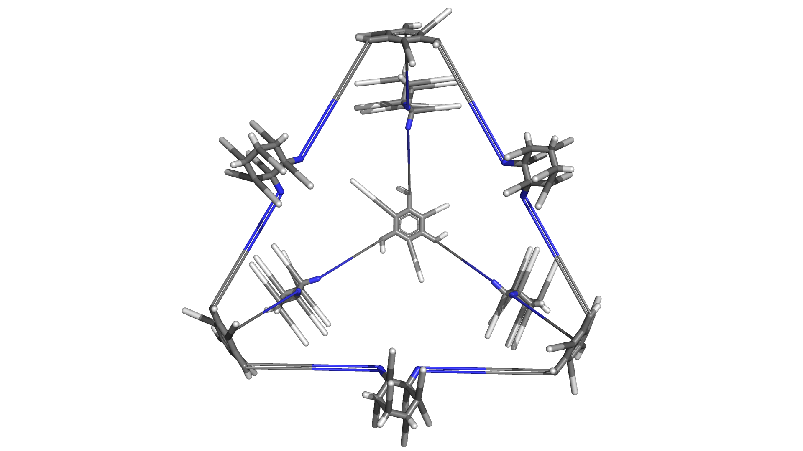
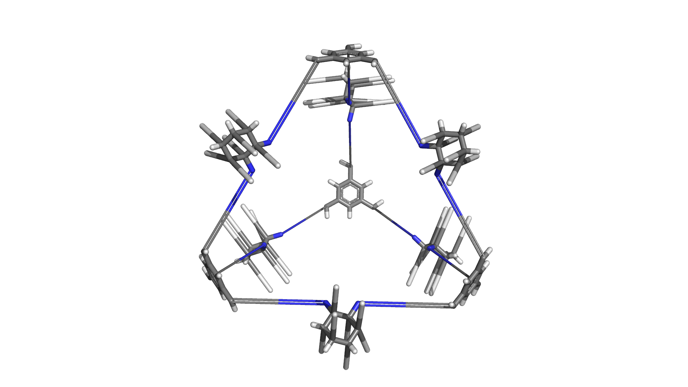
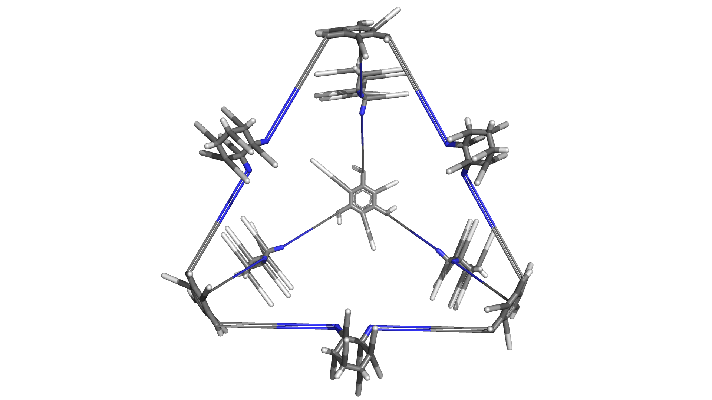

Welcome to stk’s documentation!¶
GitHub: https://www.github.com/lukasturcani/stk
Overview¶
stk is a Python 3 library for building, manipulating, optimizing
and designing molecules.
Basic Examples¶
Linear Polymer¶
The core function of stk is to assemble molecules. Here is an example
of how a simple, linear polymer can be built. Starting with three monomers,
such as
each can be loaded into a StructUnit2 object from a molecular
structure file:
monomer1 = StructUnit2('monomer1.mol', 'bromine')
monomer2 = StructUnit2('monomer2.mol', 'bromine')
monomer3 = StructUnit2('monomer3.mol', 'bromine')
The first argument is the path to the structure file and the second argument specifies the functional group of the monomer.
To assemble a polymer only a single line of code is required:
polymer = Polymer([monomer1, monomer2, monomer3], Linear('ABC', [0, 1, 0.5], n=3))
Simply create a Polymer object by giving it a list of
monomers and a topology object, in this
case Linear. The topology object defines the the structure of
the polymer being assembled. The repeating unit is 'ABC', the orientation
of the each monomer along the chain is parallel, anti-parallel and random, respectively, and
the number of repeating units is 3.
The assembled polymer can be written to a file
polymer.write('polymer.mol')
and will look like this.
Notice that the functional group has disappeared and been replaced by
new bonds between the monomers. The new bonds seem a little stretched,
so we can optimize the structure using an optimization function defined in
optimization, in this case rdkit_ETKDG()
rdkit_ETKDG(polymer)
Again, the polymer can be written to a file
polymer.write('polymer_opt.mol')
and viewed

stk also allows you to save the Python objects themselves in the JSON
format.
polymer.dump('polymer.json')
This allows you to restore a Molecule object from a previous session.
polymer = Molecule.load('polymer.json')
polymer # < Polymer NOT Molecule object >
Molecule.load() allows you to load any dumped stk JSON object
regardless of its class and it will returned an object of the correct
class to you.
Molecular Cages¶
Molecular cages are relatively exotic molecules that look like, yes, cages. Here is an example:

Despite their apparent complexity, assembling a molecular cage is extremely straightforward. In fact, it is done in exactly the same way as a polymer.
First we define the building blocks of the cage:
bb1 = StructUnit2('bb1.mol', 'amine')
bb2 = StructUnit3('bb2.mol', 'aldehyde')
Here is what they look like:

Notice a slight difference, while the first building building block still
uses the class StructUnit2, the second uses the class
StructUnit3. The reason is that the first building block has
2 functional groups while the second has 3 functional groups. Each class
defines a slightly different set of operations for manipulating the
positions of the building blocks when assembling the cage. This is
important so that the building blocks are placed exactly how we want them
when constructing a molecule. However, all of this happens behind the scenes
and a cage can be constructed through a simple one-liner:
cage = Cage([bb1, bb2], FourPlusSix())
Notice that this is exactly the same as the polymer example. To generate
a cage, we simply create a Cage object. We initialize it with
a list of building blocks and provide a topology instance, in this case
FourPlusSix. Unlike the Linear class, the FourPlusSix
does not require any additional arguments. Our assembled cage looks like
this

If we want to create a cage with a different topology but using the same building blocks, we provide a different topology instance:
cage2 = Cage([bb1, bb2], EightPlusTwelve())
The assembled cage looks like a cube:
Notice that the building blocks are the same, only the shape has changed. This is because a different topology instance was provided during initialization.
Here is a third example:
cage3 = Cage([bb1, bb2], Dodecahedron())

While we assembled some cages, the constructed structures are not particularly realistic. We can optimize the geometry using an optimization function:
macromodel_opt(cage, '/opt/schrodinger2017-4')
macromodel_opt(cage2, '/opt/schrodinger2017-4')
macromodel_opt(cage3, '/opt/schrodinger2017-4')
In this case the function macromodel_opt() was used. We could have
used rdkit_ETKDG() again but chances are the structures would
have been optimized quite poorly. The macromodel_opt() function
requires a valid MacroModel installation with a working license.
The argument '/opt/schrodinger2017-4' is the path to the installation.
Note that there are many more cage topologies available (14+), which
can be found by looking in stk.molecular.topologies.cage.


 

The topologies are organized into submodules based on the building blocks
required to build them. For example, all topologies in the
stk.molecular.topologies.cage.two_plus_three submodule are composed of two and three functionalized building
blocks, all cages in the stk.molecular.topologies.cage.two_plus_four submodule are composed of two and
four functionalized building blocks, cages in stk.molecular.topologies.cage.three_plus_three are composed
of three functionalized building blocks and so on.
All cage topologies also support being built from more than two building blocks, to produce mixed or multi-component cages.

In addition, cage topologies support a number of optional arguments which allow the many possible structural isomers to be easily assembled. These topics are discussed in Advanced Cage Building.
Covalent Organic Frameworks¶
Just like the other molecules, covalent organic frameworks (COFs) are easy to construct:
bb1 = StructUnit2('cof_bb1.mol', 'amine')
bb2 = StructUnit3('cof_bb2.mol', 'aldehyde'))
cof = Periodic([bb1, bb2], Honeycomb())
Where the buliding blocks are:

The same pattern is used. First building blocks objects are created using
StructUnit3 instances. Then a molecule is assembled by creating
an instance of its class, in this case Periodic. The molecule
being assembled is provided with the building blocks and the topology,
in this case Honeycomb.
Because COFs are periodic structures, if we want to make a finite size molecule we have to create an “island”:
cof.island([5, 5, 1])
Here we created create a 5 by 5 by 1 grid of the periodic unit cell. This is a cut-out of our structure:

Other COF topologies are available in topologies.cof. For example:


stk also gives tools to build a large number of structural isomers
of each COF. This is done analogously to the organic cage case so reading
Advanced Cage Building is recommended.
Other Materials¶
stk is a work in progress and currently supports only the above classes
of materials out of the box. However, stk was designed to be easy
extend to other classes of molecules.
For a guide on how this can be done
see, Extending stk.
Other Features¶
Calculating Molecular Properties¶
stk provides a variety of methods to calculate molecular properties.
What methods can be used depends on what kind of molecule object is created.
All molecules can use methods defined in Molecule. All
building blocks can use methods in StructUnit in addition to this.
Assembled molecules can use additional methods provided by MacroMolecule.
Here are some examples:
# Calculate the energy of a molecule using rdkit and the UFF force field.
mol.energy.rdkit('uff')
# Calculate the energy of a molecule using MacroModel. Using force field
# number 16 (OPLS3).
mol.energy.marcomodel(16, '/opt/schrodinger2017-4')
# Calculate the maximum diameter of of a molecule.
mol.max_diameter()
# Calculate the cavity size of a cage molecule.
cage.cavity_size()
# Calculate the mean RMSD between the building blocks original
# structure and their structure inside an assembled macromolecule.
macro_mol.bb_distortion()
# Get the center of mass of a molecule.
mol.center_of_mass()
# Get the atomic symbol of atom with id of 13.
mol.atom_symbol(13)
Geometric Manipulations¶
In addition to molecular property calculation, stk provides tools to
rotate and translate molecules. These tools are particularly useful when
defining the assembly process of a new class of molecules.
# Change the position of a molecule.
mol.set_position([1, 2, 3])
# Get a matrix holding the position of every atom in the molecule.
mol.position_matrix()
# Use a matrix to set the position of every atom in the molecule.
mol.set_position_from_matrix(some_matrix)
# Rotate the molecule along by pi radians about the vector (1, 1, 3)
mol.rotate(np.pi, [1, 1, 2])
Dealing with Multiple Conformers¶
Every Molecule, be it a StructUnit or a MacroMolecule
supports multiple conformers. These are stored in the underlying
rdkit object held in Molecule.mol.
Adding a new conformer to a StructUnit is simple
bb1 = StructUnit2('bb1_conf1.mol', 'amine') # Loads molecule into conformer 0.
bb1.update_from_mol('bb1_conf2.mol', conformer=1) # Load into conformer 1.
Lets take a look

Well, one is clearly better than the other. At least they are easy to recognize.
Lets try this with a another building block as well
bb2 = StructUnit3('bb2_conf1.mol', 'aldehyde')
bb2 = bb2.update_from_mol('bb2_conf2.mol')

Also pretty distinguishable. This is good, it makes it easy to show
that you can pick which conformers to use for assembly with MacroMolecule
cage = Cage([bb1, bb2], FourPlusSix(), bb_conformers=[0, 0])
cage.add_conformer([0, 1])
cage.add_conformer([1, 0])
cage.add_conformer([1, 1])
These are the conformers we produced!
 



stk will use whichever StructUnit conformers you want, when
constructing conformers of the MacroMolecule itself.
Most methods and functions in stk also support conformers.
mol.position_matrix(conformer=1)
mol.energy.rdkit('uff', conformer=0)
mol.cavity_size(conformer=1)
# And so on ...
Dealing with Multiple Molecules¶
When batches of molecules are created, it is often desirable to optimize
them all at once. By placing the molecules in a Population
instance, all molecules can be optimized in parallel.
pop = Population(cage, cage2, cage3)
pop.optimize(FunctionData('macromodel_opt', macromodel_path='/opt/schrodinger2017-4'))
In addition to this, the Population class provides some handy
tools to assemble large amounts of molecules at a time. For example if
we want to create every possible cage from a set of building blocks and
topologies:
bbs1 = [StructUnit2(path, 'aldehyde') for path in ('1.mol', '2.mol', '3.mol')]
bbs2 = [StructUnit3(path, 'amine') for path in ('4.mol', '5.mol', '6.mol')]
# Create 18 Cage molecules.
pop2 = Population.init_all(Cage, [bbs1, bbs2], [FourPlusSix(), EightPlusTwelve()])
Or if we want to select building blocks at random and create 5 cages:
pop3 = Population.init_random(Cage, [bbs1, bbs2], [FourPlusSix(), EightPlusTwelve()], 5)
Finally, the population can be used to calculate statistics across all molecules. For example, if you want to know the average cavity size of your cages:
pop.mean(lambda x: x.cavity_size())
Extending stk¶
Each module of stk has its own guidelines for adding new functionality.
However, in almost all cases adding new features to stk only involves
defining a simple function in the appropriate module or a method in the
appropriate class.